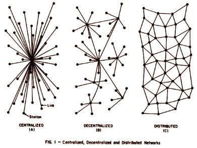

“They are slaves of Allah. And we are free.”
A very interesting analysis below. I liked the statement above (albeit out of context). A worthy title to my response to your poster “Evil Muslims and Noble Judeo-Christians”
This is a very interesting piece, especially its organizational scheme.
Mike
III
Building a Distributed Counterjihad Network
by Baron Bodissey

The last five years have taught me that I bring only three skills to the anti-jihad movement.
The first is a knack for writing propaganda. By “propaganda” I do not mean the 20th-century version as practiced by the Nazis, the Soviets, the New Deal, and other huge and repressive state enterprises.
I use the word in its original sense, which was derived via the Romance languages from the Latin verb propagare, “to cause to increase or spread, as of a plant”. In the 18th century it referred to the work of a committee of cardinals (congregatio de propaganda fide, “the congregation for propagating the faith”) which was charged with the foreign missions of the Church.
In the 19th century “propaganda” took on a more generalized meaning, “the dissemination of a doctrine or practice”. It wasn’t until the Age of Utopias arrived a century later that it was understood to mean “the retailing of lies by state media in order to support, maintain, and extend the power of the State”.
So, in an old-fashioned way, one of my main functions in this space is to disseminate doctrine through propaganda.
My second skill — which I use in tandem with the first — is the making images of various sorts. I enjoy this activity more than any of the others.
The third skill involves networking with people. In person I am a severe introvert, and find it difficult and painful to meet new people. But email and skype seem to obviate this disability, and since I took up blogging, I’ve found that seeking and maintaining contacts online comes easily and naturally. My native shyness is no impediment when making friends over the Internet.
It is this last skill that I carry to all the Counterjihad meetings I attend. These activities have forced me to think carefully about the process of networking, and how it applies to the formation of an international Western resistance to the Islamization of our culture, often under repressive conditions.
I left for the meeting in Denmark a day early and without a laptop so that I could have enough time to ponder and write up a presentation on distributed networks as they apply to the Counterjihad. The treatise below is adapted from the longhand notes that I made for the May 16th session in Copenhagen.


The Distributed Network
I. Introduction
What we’re doing here is something relatively new: the organization of a Counterjihad network using the Internet and other forms of global electronic communication.
The work we do must remain at least partially clandestine for three reasons:
1. The governments of our countries are repressive.
The evidence for this assertion is that even here in Denmark, most people prefer to be pseudonymous. The situation is even worse in the UK, Finland, Belgium, Sweden, France, and the Netherlands. In those countries, people with opinions like ours can be arrested and prosecuted.
2. There is also unofficial repression.
The violent actions against “racists” by Antifa and similar groups are permitted, condoned, and tacitly supported by the various Left and Center-Left parties that head the governing coalitions in most European countries.
3. The danger of attacks by Muslims.
If you add to the above the risk of being killed by the Religion of Peace — keeping Theo Van Gogh and Kurt Westergaard in mind — it’s no wonder that people prefer to do this sort of work under pseudonyms.
Thus the problem is to organize extensive, robust, and effective Counterjihad groups without putting our people at risk, and without courting the dangers that would discourage new people from joining.
This is where distributed networks come in.
II. What is a distributed Network?
1. Decentralized
A distributed network has no “boss”, and no hierarchy except at the very local level. No one can issue orders or commands over the larger network and expect them to be obeyed.
This means that decision-making can be slow and frustrating. Before it can be implemented, an idea has to spread through the larger network, excite discussion, and be determined to serve the interests of the different components of the network.
This process takes time, but it also means that decisions are likely to be more appropriate and effective when they are finally arrived at.
Once an idea takes hold, action within the network tends to proceed very quickly.
2. Flexibility
Because there is no individual or small group controlling the distributed network, new ideas may arise and be accepted easily. The variety of contributing groups is a guarantee against rigidity and narrowness of approach.
Because there is no hierarchy, information in the network flows through multiple horizontal paths of communication, and not simply up or down the branches of a “tree”. If one component or sub-network opts out of any particular action, others will participate, accomplishing the same task through alternative means.
Much of this flexibility thus arises from:
- - - - - - - - -
3. Redundancy
People within the network may burn out, change allegiances, lose interest, or take on other work, so that redundancy is an absolute necessity. For any given function and within any given region, there should be multiple ways of accomplishing the same task, and multiple channels through which information travels.
III. How is a distributed network structured?
Visualize the distributed network as a nervous system, but not the type normally associated with a vertebrate animal — no brain or spinal cord. Instead imagine an earthworm or a hydra, with a number of ganglia (nodes) connected by nerve pathways.
If you remember from your high school biology class, when an earthworm is cut into several pieces, each fragment may well survive and grow into a full-sized earthworm.
1. Nodes
The nodes in our networks consist of people, either acting alone as individual contacts, or as a stand-ins for a larger group, in effect functioning as gateways or domain controllers for other networks.
Thus Aeneas is here today as a node in the same network that contains me and the rest of you, but at the same time he is a portal opening onto a much larger collection of people who form an anti-jihad network in the UK.
Each node may represent a specialized function, either as performed by an individual or a group. For example, a contact in the network may function primarily as a maker of videos, but may also represent a small group of colleagues who perform the other specialized tasks required — video recording, audio dubbing, graphic effects, subtitling, etc. The larger network is thus aware only of the individual and his representative function, but the sub-network contains the additional components.
The most specialized function of all is perhaps that of the “idea man”, the theoretician, the thinker who contributes components of the ideological framework that guides the entire network. The theoretician may be hooked into the network by only one or two connectors, even though his may well be one of the most valuable contributions.
Most people, however, will act as nodes in multiple overlapping networks. This is what gives the distributed network its power and flexibility.
Under conditions of extreme political repression, the nodes of the network may be structured as “cells” on the traditional revolutionary model, so as to limit damage in the event any individual is compromised.
2. Connectors
The connectors or links which join the nodes together are harder to define — they consist of the lines of communication between people, in whatever forms these may take. Ideally, each node will connect in multiple ways to a significant number of other nodes, adding to the general flexibility and redundancy of the network.
Possible connectors include email, instant messaging, telephone, snail-mail, face-to-face meetings, carrier pigeon, etc. — any medium through which human beings may communicate with one another.
Under conditions of extreme political repression, the old-fashioned media — written messages and face-to-face meetings — will come to the fore again.
IV. Optimum size and functionality
To operate effectively, a non-hierarchical network must be limited in size. A single node — one person, possibly representing a larger group — cannot function efficiently with more than 60-80 connectors to other nodes.
I have personal experience with the effects of too many connections, because I exceeded that limit some time ago, and my network activities have become that much less effective as a result.
When a node in the network exceeds the maximum size limit, the problem can be resolved in one of two ways:
1.
The network can be transformed into a hierarchical one, with sub-networks that operate in subordination to the main node, or
2.
The network can undergo “mitosis”, splitting into two or more independent networks, with a division of resources among the “children” as seems appropriate, and with continuing communication via representative nodes in each child.
A combination of the two strategies is probably the optimum result. Sub-networks may spontaneously organize themselves, recognizing an informal and voluntary hierarchy within a larger network of networks. Groups of people who feel comfortable working together can perform specialized functions, with an assigned spokesman acting as a single node in the larger network.
The network as a whole may also split along regional or other lines, with overlapping nodes allowing for continued contact and communication. This is especially appropriate within a language group, and people with skills in multiple languages will naturally tend to become “ambassador” nodes acting as connectors to various super-networks.
You can see this process at work in the evolution of the ICLA network, which began as the 910 Group and later expanded to become CVF.
The original core group consisted of a handful of activists from the United States, Canada, and Europe. The first mitosis occurred when European operations became largely separate. This group [the attendees at the Copenhagen meeting] represents the European network, which for some bizarre reason has an American acting as one of its major coordinating nodes!
The European network has also formed sub-networks, including a UK group, a Swedish group, an Austrian group, a French group, a Finnish group, and so on. At the same time new liaisons have developed between our network and other existing networks. One successful liaison is our relationship with the Italian Counterjihad groups, as developed by Gaia.
An example of a successful sub-network on the basis of function is the video production group — a loose and fluid collection of people who make (or reproduce) videos, transcribe, translate, and subtitle the final product. This group acts independently to produce material, and then connects to the larger network through me or one of the other nodes to distribute its work.
V. Why a distributed network?
We — the European Counterjihad — are compelled by necessity to form a distributed network, because we operate without funding. Whenever funding is available, a hierarchical network naturally results, because one person (or a small group) controls the flow of money, and the other nodes in the network are answerable to him. A hierarchical tree forms, based on the distribution of monetary resources.
The head of a funded hierarchical network can act as a node in a larger distributed network, but the “money man” himself will inevitably command a hierarchy.
A hierarchical network obviously has its advantages — when money is available, the network can act in ways that we can only dream of.
But a hierarchy is brittle — a break in one of the major branches of the tree disables those smaller branches that lie further out and depend on it.
A hierarchy is also susceptible to incompetence and corruption. When the head of the hierarchy ceases to function optimally for either of these reasons, the entire network is effectively disabled. The absence of institutional redundancy and alternative pathways prevents information from routing around the damaged areas.
The distributed network thus has major advantages in resilience and flexibility. With no central authority, we cannot be corrupted from the top. And when part of the network is compromised or disabled, alternative pathways form almost immediately around the damaged portion.
VI. Creating and enhancing the distributed network
The formation of a distributed Counterjihad network is a natural process, as like-minded people band together in pursuit of a common purpose. It would occur in any case, without anyone being conscious of the process or thinking about how to bring it into being.
However, being aware of the theoretical issues can expedite the process.
The four major tools employed in building the network are (1) the recognition of a common interest, (2) personal relationships, (3) the art of persuasion, and (4) the ability to delegate.
1. A common interest
Our common interest is the Counterjihad; that is, the resistance to the Islamization of the West, and the affirmation and strengthening of Western cultural values. This is clear enough.
However, it’s a good idea to pay attention to the places where various interests diverge. An example of this would be the Jew-haters: I reject them not only because I find their ideology repugnant (which I do), but also because our interests diverge. If opposing the Jews is a paramount interest for a group, it will eventually join forces with the Muslims against us. We cannot make common cause.
On the other side are the Nazi-phobes: the people who are so afraid of being branded Nazis or racists that they will do anything to avoid such a fate. Ultimately our interests will diverge, because being called “Nazis” and “racists” is something we simply cannot avoid as long as our primary mission is to resist the Great Jihad.
2. Personal relationships
Skill with personal relationships is an absolute necessity for any substantial node in the network. Approaching interactions with another person on a purely utilitarian basis — How can this person serve my interests? What use can he be to me? — is not as valuable as maintaining a broad-based connection that grows naturally and may have no immediate payoff.
This is what brought me into the business: I seem to have a knack for forming and maintaining personal contacts with a wide variety of people. It’s the single major skill that I bring to the table.
3. The art of persuasion
Since nobody gets paid, nobody can issue commands. Only persuasion can get things done.
There has to be a lot of horse-trading — “You do this for me, and I’ll do that for you.” There has to be a lot of discussion, a patient amassing of details. I have to be willing to compromise, to be diverted from my original course of action, and to see the situation from someone else’s point of view.
In other words, persuasion relies on the skills of a salesman combined with those of a priest.
If I can’t talk myself three feet off the floor, I can’t get the job done.
4. Delegation
If you are unwilling to delegate tasks within the network — if you insist on complete personal control of every process — your effectiveness within the network will be limited, especially as it expands and grows more complex.
My own responsibilities have increased to the point where I am required to manage connections to 75-100 nodes, which all but exceeds the practical load that can be carried by any individual human being acting in a network. If I don’t delegate most tasks, I can scarcely be effective at all.
I have had to learn to say, “I rely your judgment.” I have learned to accept that the people around me are fallible human beings like myself, but that I must rely on their decisions anyway, even if they arrive at different conclusions than I would.
Surrendering total control of what transpires is an absolute necessity.
VII. Synchronization
One of the ultimate goals in the formation of the larger network is synchronization — the ability to coordinate simultaneous actions over widespread areas and in different countries, and also to bring people together to converge on a single location for a targeted action.
Remember: this is what our enemies among the “anti-fascists” and the Muslims are very effective at. Those anti-Motoon riots that broke out all over the world at about the same time were not spontaneous. They were coordinated and carefully timed.
However, they were not centrally controlled. No “Jihad Boss” issued orders telling everyone what to do — the perpetrators were simply acting within a distributed network that functioned very effectively. They were all working with a common interest: Islam.
These are the characteristics we should seek to emulate. As we contemplate future actions, we need to keep in mind that any action planned and launched in one country should have “brother actions” across Europe, and even the whole of the Western world.
* * * * * * * * * * * * * * *
The above analysis is mainly concerned with content, and not with process. The theory and practice that I have outlined are independent of ideology. Our enemies can — and do — utilize distributed networks to facilitate terror attacks, penetrate the West, and subvert our institutions. In fact, they are way ahead of us in this regard.
But they are working at a disadvantage: they are slaves of Allah.
And we are free.

Note:
The diagram at the top of this post is from An Atlas of Cyberspace by Martin Dodge, who describes Paul Baran’s work:
The pioneering research of Paul Baran in the 1960s, who envisioned a communications network that would survive a major enemy attack. The sketch shows three different network topologies described in his RAND Memorandum, “On Distributed Communications: 1. Introduction to Distributed Communications Network” (August 1964). The distributed network structure offered the best survivability.
3 comments:
Mike - In a similar vein, the Standing Orders for Open Source Insurgency that John Robb has been posting on http://globalguerrillas.typepad.com/ has been EXCELLENT. Well worth your time to read.
damn it BIGGIE, I just came here to say that
Unfortunately, this counter-jihad network is fighting an uphil battle, because, as the author indicates, free speech rights don't exist for anti-jihad critics in a lot of Europe, so they're forced into using this type of network. Once one accepts that their free speech right is gone, the battle's pretty much over. I don't even want to think about how to communicate anti-muslim messages "underground" afraid of some dhimmi/ sharia law speech police. I refuse to submit to it. Did I mention the prophet muhammad was a murderer and a child molester?
Post a Comment